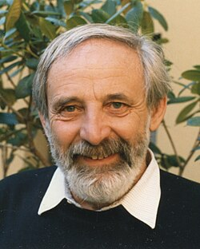

Raoul Bott | |
|---|---|
 Raoul Bott in Berkeley, 1986 | |
| Born | September 24, 1923 |
| Died | December 20, 2005 (aged 82) San Diego, California, U.S. |
| Alma mater | McGill University Carnegie Mellon University |
| Known for | Bott cannibalistic class Bott periodicity theorem Bott residue formula Bott–Chern cohomology Bott–Duffin synthesis Bott–Samelson resolution Bott–Taubes polytope Bott–Virasoro group Atiyah–Bott formula Atiyah–Bott fixed-point theorem Borel–Weil–Bott theorem Morse–Bott theory |
| Awards | Veblen Prize (1964) Jeffery–Williams Prize (1983) National Medal of Science (1987) Steele Prize (1990) Wolf Prize (2000) ForMemRS (2005) |
| Scientific career | |
| Fields | Mathematics |
| Institutions | University of Michigan in Ann Arbor Harvard University |
| Richard Duffin | |
Doctoral students | |
Other notable students | Loring W. Tu |
Raoul Bott (September 24, 1923 – December 20, 2005)[1] was a Hungarian-American mathematician known for numerous foundational contributions to geometry in its broad sense. He is best known for his Bott periodicity theorem, the Morse–Bott functions which he used in this context, and the Borel–Bott–Weil theorem.
Bott was born in Budapest, Hungary, the son of Margit Kovács and Rudolph Bott.[2] His father was of Austrian descent, and his mother was of Hungarian Jewish descent; Bott was raised a Catholic by his mother and stepfather in Bratislava, Czechoslovakia, now the capital of Slovakia.[3][4] Bott grew up in Czechoslovakia and spent his working life in the United States. His family emigrated to Canada in 1938, and subsequently he served in the Canadian Army in Europe during World War II.
Bott later went to college at McGill University in Montreal, where he studied electrical engineering. He then earned a PhD in mathematics from Carnegie Mellon University in Pittsburgh in 1949. His thesis, titled Electrical Network Theory, was written under the direction of Richard Duffin. Afterward, he began teaching at the University of Michigan in Ann Arbor. Bott continued his study at the Institute for Advanced Study in Princeton.[5] He was a professor at Harvard University from 1959 to 1999. In 2005 Bott died of cancer in San Diego.
With Richard Duffin at Carnegie Mellon, Bott studied existence of electronic filters corresponding to given positive-real functions. In 1949 they proved[6] a fundamental theorem of filter synthesis. Duffin and Bott extended earlier work by Otto Brune that requisite functions of complex frequency s could be realized by a passive network of inductors and capacitors. The proof relied on induction on the sum of the degrees of the polynomials in the numerator and denominator of the rational function.[7] In his 2000 interview[8] with Allyn Jackson of the American Mathematical Society, he explained that he sees "networks as discrete versions of harmonic theory", so his experience with network synthesis and electronic filter topology introduced him to algebraic topology.
Bott met Arnold S. Shapiro at the IAS and they worked together. He studied the homotopy theory of Lie groups, using methods from Morse theory, leading to the Bott periodicity theorem (1957). In the course of this work, he introduced Morse–Bott functions, an important generalization of Morse functions.
This led to his role as collaborator over many years with Michael Atiyah, initially via the part played by periodicity in K-theory. Bott made important contributions towards the index theorem, especially in formulating related fixed-point theorems, in particular the so-called 'Woods Hole fixed-point theorem', a combination of the Riemann–Roch theorem and Lefschetz fixed-point theorem (it is named after Woods Hole, Massachusetts, the site of a conference at which collective discussion formulated it).[9] The major Atiyah–Bott papers on what is now the Atiyah–Bott fixed-point theorem were written in the years up to 1968; they collaborated further in recovering in contemporary language Ivan Petrovsky on Petrovsky lacunas of hyperbolic partial differential equations, prompted by Lars Gårding. In the 1980s, Atiyah and Bott investigated gauge theory, using the Yang–Mills equations on a Riemann surface to obtain topological information about the moduli spaces of stable bundles on Riemann surfaces. In 1983 he spoke to the Canadian Mathematical Society in a talk he called "A topologist marvels at Physics".[10]
He is also well known in connection with the Borel–Bott–Weil theorem on representation theory of Lie groups via holomorphic sheaves and their cohomology groups; and for work on foliations. With Chern he worked on Nevanlinna theory, studied holomorphic vector bundles over complex analytic manifolds and introduced the Bott-Chern classes, useful in the theory of Arakelov geometry and also to algebraic number theory.
He introduced Bott–Samelson varieties and the Bott residue formula for complex manifolds and the Bott cannibalistic class.
In 1964, he was awarded the Oswald Veblen Prize in Geometry by the American Mathematical Society. In 1983, he was awarded the Jeffery–Williams Prize[11] by the Canadian Mathematical Society. In 1987, he was awarded the National Medal of Science.[12]
In 2000, he received the Wolf Prize. In 2005, he was elected an Overseas Fellow of the Royal Society of London.
Bott had 35 PhD students, including Stephen Smale, Daniel Quillen, Peter Landweber, Robert MacPherson, Robert W. Brooks, Susan Tolman, and Eric Weinstein.[13] Smale and Quillen won Fields Medals in 1966 and 1978 respectively.
Raoul Bott Margit Kovacs.
.jpg){kind=link}